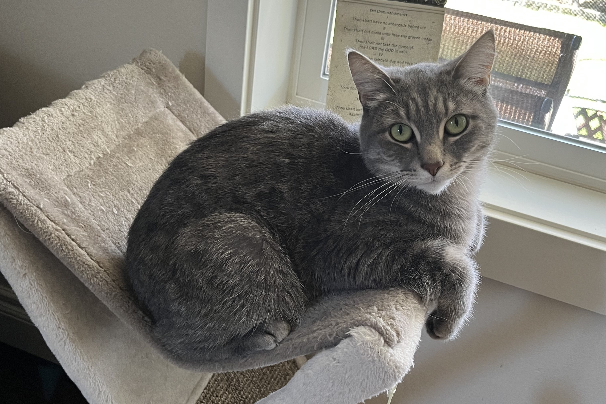

So you want to know more about this website?
It showcases 12 of my all-time favorite jazz saxophonists. By clicking on an artist's
profile, you'll find detailed information about them, including a couple of my favorite
musical compositions or solo improvisations.
I, Jacob Klymenko, created this website in 2024 as my first programming project to
explore my interest in Computer Science, and also to try out front-end development. My
hope is that visitors to this website either discover a new genre of music or are
interested enough to explore some of my personal favorite jazz artists.
Most of the musicians featured on here are no longer with us, but they remain some of
the most important and influential figures in jazz. A few of them are rising contemporary
artists who are pushing the genre forward with their powerful and innovative sounds.
Technologies Used: This site was built using HTML, CSS, vanilla JavaScript,
and JSON. For each artist, I used a small API to fetch text data from Wikipedia in
order to compile their biographies.
Fun Fact: The name "JazzList" reflects my love of Jazz and is also a
memory of a short time when I struggled with Linked List manipulation in my
Data Structures course.

Here is a random photo of my family's cat, Dimok!
(translated to "Smokey" from Russian to English)
Feel free to reach out via the email icon to the right or connect with me on
LinkedIn.